英文
英文乔治等
编者按
量子理论对微观世界的描述认为，微观粒子常常处于两个或两个以上状态的叠加态中。阿尔伯特·爱因斯坦以及其他量子理论的批评者们很早就注意到，此一对微观世界的描述与宏观物体通常具有明确的属性这一事实之间存在着难以调和的矛盾。本文中，利昂·罗森菲尔德与其同事们试图说明这一矛盾可以通过考虑尼尔斯·玻尔所倡导的、原子层次上不同描述模式间的“互补性”来加以解决。他们认为，利用量子统计力学中的密度矩阵就可将玻尔的观点纳入一个形式的框架中。物理学家们后来指出，上述提议并没有解决这个难题，直至今日它仍然是量子理论中一个重要的基本问题。 英文
原子理论提出了一个认识论问题——如何调和量子力学所给出的对原子系统的详细动力学描述，与在宏观观测水平上对单个原子过程以及大块物质行为的描述二者之间的关系。认识到两种描述模式之间的互补关系就可以完全阐明这一问题的逻辑性：一方面，不确定关系表达出互补性，它决定了宏观的时空局域性与动量–能量守恒可应用于单个的原子过程；另一方面，对于一个由原子组成的大系统，根据量子力学（和电动力学）计算其行为与将此系统视为材料实体按照宏观力学、电磁学以及热学的概念对其进行描述，这两者之间存在着互补性。 英文
但是，这一问题形式上的一面，即建立能将量子力学公式与描述宏观观测所用概念联系起来的各个规律之间的一致性，仍为发展出一种与实际情况概念上的简单性更符合的表述留出了空间。我们在近期发表的一篇文章[1]中给出的用量子理论处理较大原子体系的一般性方法能满足上述急迫需求。本文旨在概述这一方法及其重要结论。 英文
布鲁塞尔小组过去十年所从事的工作清楚地表明，最适于研究大原子系统的是曾经用于无限系统的极限情况（即具有无穷多自由度的系统，但该系统在给定相位范围内的单元是有限的）的统计力学动力学方法而不是各态遍历方法。因为这类系统基本上具有连续能谱，所以可以忽略棘手的“粗粒化”问题。此外，关于时间的密度算符的渐近极限虽然在原子尺度上非常大，但仍然有限，可以直接讨论。讨论的结果[2]是：或许可以将系统的时间演化严格地分成形式上独立的“子动力学”部分，以目前的解释方式（也就是采用取决于系统组成元素之间关联性的特定投影算符）来表征。下文中式（7）给出的投影算符 的其中一个子动力学即可包含关于平衡性质和线性输运性质的所有信息。因此，我们可以将宏观层次的量子力学描述定义为基于子空间变量的约化描述。这一约化描述有可能恰好是源于以下事实：子动力学是由一个独立的演化方程来表示的。将这种分析方法应用于一测量装置，该装置初始时通过原子寿命与原子物体之间的相互作用而触发。结果出人意料地表明：它在空间中的演化遵循量子力学的“约化”规则；这一重要结论是由该装置子空间的数学结构直接得出的，它消除了原子物体密度算符各分量之间的初始相位关系。在本文中我们叙述了以一种简单而通用的方式推导出上述不寻常结论的过程，由此可以更清晰地表明：这些方法如何能不仅使我们更深刻地理解原子理论中的认识论问题，甚至还能显著拓展量子力学的范围。 英文
的其中一个子动力学即可包含关于平衡性质和线性输运性质的所有信息。因此，我们可以将宏观层次的量子力学描述定义为基于子空间变量的约化描述。这一约化描述有可能恰好是源于以下事实：子动力学是由一个独立的演化方程来表示的。将这种分析方法应用于一测量装置，该装置初始时通过原子寿命与原子物体之间的相互作用而触发。结果出人意料地表明：它在空间中的演化遵循量子力学的“约化”规则；这一重要结论是由该装置子空间的数学结构直接得出的，它消除了原子物体密度算符各分量之间的初始相位关系。在本文中我们叙述了以一种简单而通用的方式推导出上述不寻常结论的过程，由此可以更清晰地表明：这些方法如何能不仅使我们更深刻地理解原子理论中的认识论问题，甚至还能显著拓展量子力学的范围。 英文
定义希尔伯特空间与其对偶空间的直积为超空间，其中的密度算符 (t)表现为超矢量，它按照以下形式的刘维尔方程随时间变化：
(t)表现为超矢量，它按照以下形式的刘维尔方程随时间变化：
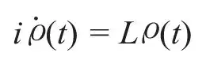
刘维尔超算符L可以用系统的哈密顿量H表示。为此，根据定义O=MN，我们可以用简便的符号来表示取决于一对超矢量M、N的一类特殊的“可分解”超算符O≡M×N；然后，我们可以得到L=H×1 – 1×H。我们的目的是要找出关联性造成的长时效应，首先我们必须将我们的由哈密顿量H描述的系统与由H0描述的“模型”系统进行比较。在“模型”系统中，与关联性有关的相互作用能V被去掉，它们的关系可以由H=H0+V表示。H0的本征态在希尔伯特空间中形成了表象的一组完备正交基，据此，我们在超空间中构造一组类似的基矢：后者可以被分为两类超矢量——由成对的全等（或物理上等效的）本征态构成的超矢量和由成对的不同本征态构成的超矢量；它们分别属于超空间中的两个正交子空间，可用投影超算符P0和Pc来表征。因此，密度超矢量的投影算符0=P0和c=Pc分别对应于平均分布密度和关联的振幅。取L00=P0LP0，L0c=P0LPc等等，我们可以得到关于0和c的耦合刘维尔方程：
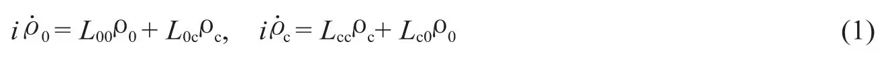
下一步，从这些方程中求出当时间变量取很大正值时0和c的渐近形式0(t)和c(t)：由此我们期望能够在宏观时间尺度上预见系统未来的演变。 英文
为了表征我们期望会出现“正常”渐近行为的那一类系统，也即趋近于平衡态的系统，我们在此必须限制刘维尔超算符的通用性。为此，我们发现关联密度c的时间演化实质上是由超算符Tc = exp(–iLcct)决定的，该超算符与刘维尔超算符中在关联子空间内完全作用的那一部分有关。因此我们假定，超算符Tc(t)对任何正则的变化超矢量A的渐近作用是将这个超矢量减小到零：limt→∞ T(t)A=0；我们通过这个假定来表示系统对其关联性的“记忆”的衰减。这一条件也可表示为对Tc(t)进行拉普拉斯变换的解析条件。在那些可以引入一个诸如耦合常数或密度等“小”物理参数来表示的无限系统中，利用微扰展开，人们已经首次证实该条件确实是这样的形式[3]。最近有人指出：对于可解模型，例如弗里德里克斯模型，有一大类相互作用是严格满足解析性假定的（即独立于任何微扰方法）[4]。根据上述假设，我们很容易从刘维尔方程（1）中的第二个式子导出渐近密度之间的下述关系：
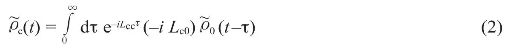
上式具有积分方程的形式，由此可以说明系统的渐近关系是怎样通过以系统在一段时间内的平均状态为起始的一系列过程而建立的。 英文
现在我们通过
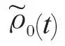
的下述表达式来引入渐近时间演化算符：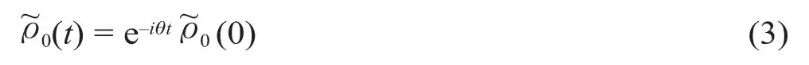
表达式（3）的优点是可将积分方程（2）简化为时间取相同值时与c(t)之间的一种简单线性关系：
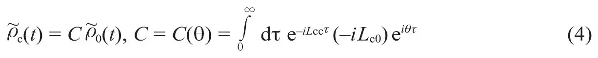
因此，由刘维尔方程（1）中的第一个式子可以得到一个关于θ的函数方程：
θ = L00 + L0c C(θ)
（5）
该式可用迭代法求解。 英文
由此得到的总渐近密度 = 0+c具有不同寻常的性质——它是刘维尔方程的一个精确解。根据式（4），可以将其改写成 = Pa的形式，其中Pa = P0+C。超算符Pa在超空间中具有投影算符的特性、幂等性和“伴随对称性”（即，自伴超矢量A的投影PaA也是自伴的），这些同样不同寻常。投影算符Pa定义了一个渐近密度有限的子空间。这个子空间与平均子空间P0之间的差别在于叠加了关联子空间Pc的一部分，即由超算符C确定的那部分；可以把后者解释为代表了在渐近平均情况下的关联建立（我们称之为关联产生超算符）——它可以区分出那些具有长时效应并因此在宏观层次上有所显现的关联过程。因此，渐近密度 并非如预期的那样，是由不同于刘维尔动力学方程的“动力学方程”决定的：它是刘维尔动力学方程的一个精确解，其渐近特性是通过被限制在由投影算符Pa定义的子空间中而得到的。 英文
并非如预期的那样，是由不同于刘维尔动力学方程的“动力学方程”决定的：它是刘维尔动力学方程的一个精确解，其渐近特性是通过被限制在由投影算符Pa定义的子空间中而得到的。 英文
在Pa的定义中引入了由关联产生的超算符C的表达式，该表达式在时间上显然是非对称的，它使投影算符Pa向时间演化的择优方向发生了预期的偏移。实际上，时间反演将Pa变换成了另一个投影算符
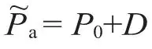
，其中超算符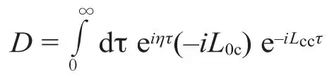
是C的时间逆；它含有θ的时间逆——超算符η，并且满足将式（5）进行时间反演而推导出的表达式η = L00+DLc0。与C不同，超算符D描述的是导致出现渐近平均状态的关联“相消”序列。 英文
在此图景中仍然缺少了一个重要的元素：我们必须在渐近的密度超矢量 与任意选取的动态密度超矢量(0)之间建立起联系，其中(0)被假定为时间演化的起始点。这一点很容易实现，但要以超算符θ及其时间逆η的一个更为不同寻常的性质（容易推导出）为基础：
与任意选取的动态密度超矢量(0)之间建立起联系，其中(0)被假定为时间演化的起始点。这一点很容易实现，但要以超算符θ及其时间逆η的一个更为不同寻常的性质（容易推导出）为基础：
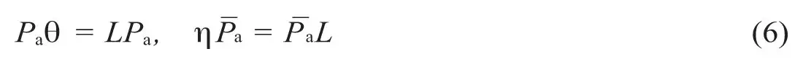
记N0=1+DC，由式（6）和式（3）可得：
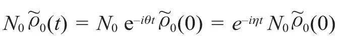
而另一方面：
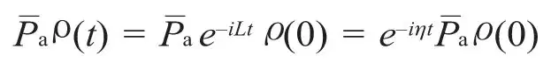
这表明
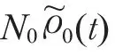
和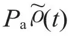
的时间演化相同，均由超算符exp(–iηt)决定：因此，我们可在任意时刻令二者相等，由此得到动态密度与渐近密度之间的对应关系。这样就给出了一个非常基本的关系，并且在任意时刻均成立：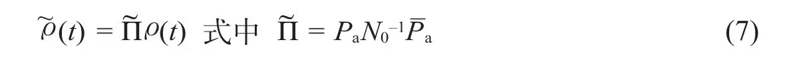
由此可得：
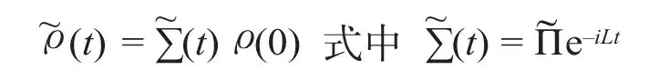
这就是最后一个问题的答案，整个理论完成。 英文
式（7）中超算符的显著特征是：根据上文中的定义，它也是一个意义扩展了（不包含自伴性质）的投影算符；此外，它在时间反演后保持不变：它定义了超空间中的一个时间对称的子空间，从任意给定的状态开始，该子空间中时间演化的渐近部分保持有限，表现出了在宏观尺度上所观测到的性质；而在原子时间尺度上出现的不规则涨落则被纳入与渐近子空间正交的互补子空间中。对于密度超矢量表象而言，能够实现原子系统两个方面之间的明确分离完全是一个出乎意料的特性：在希尔伯特空间中对系统演化进行研究是不可能得到这一结果的，因为只有通过超空间的形式才能阐释它。 英文
超算符是不可分解的：除密度超矢量外，不能将其他任何态矢量归于我们所定义的渐近状态。事实上，由式（4）可以看出：密度的关联部分 是从表征系统平均概率分布的
是从表征系统平均概率分布的 部分直接推导出来的；由于投影算符的这种特殊结构，有可能仅用概率就能完全描述空间中的演化。特别地，原子系统与测量装置发生相互作用之后的“波包坍缩”正是空间描述的这一性质的直接结果：最关键的一点是，测量装置必须属于量子力学的宏观层次，于是它的行为必须通过它在空间中的变量来描述（大体来说，因为与热力学平衡态或近平衡态有关的变量都属于空间，所以测量装置的行为具有“热力学”的特征）。因此，我们可以去掉原子系统初态中的所有相位关系（即，使它们退化到正交子空间）：这就是原子系统的初态经测量后“坍缩”的唯一内涵。至于人类观测者，他与装置之间的相互作用也在子空间中得到了完整的描述，因而他对正交子空间中发生的一切不会造成任何影响。 英文
部分直接推导出来的；由于投影算符的这种特殊结构，有可能仅用概率就能完全描述空间中的演化。特别地，原子系统与测量装置发生相互作用之后的“波包坍缩”正是空间描述的这一性质的直接结果：最关键的一点是，测量装置必须属于量子力学的宏观层次，于是它的行为必须通过它在空间中的变量来描述（大体来说，因为与热力学平衡态或近平衡态有关的变量都属于空间，所以测量装置的行为具有“热力学”的特征）。因此，我们可以去掉原子系统初态中的所有相位关系（即，使它们退化到正交子空间）：这就是原子系统的初态经测量后“坍缩”的唯一内涵。至于人类观测者，他与装置之间的相互作用也在子空间中得到了完整的描述，因而他对正交子空间中发生的一切不会造成任何影响。 英文
另有一点值得一提。上述理论给我们提供了一条简单的标准，用以判断系统是否表现出由热力学所描述的标准宏观行为。渐近时间演化超算符θ与由超算符L0cTc(τ) Lc0的拉普拉斯变换而定义的“碰撞超算符”之间有密切的关系：
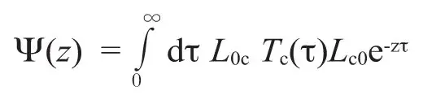
实际上，式（5）可改写成含有Ψ(z)的泛函关系式：
iθ = iL00+ Ψ(–iθ)
（8）
于是，当碰撞算符为零时，一个均匀系统（L00 = 0的系统）显然不会有任何趋于平衡的表现。由式（8）可知：如果θ本身没有同时趋于零，则系统将不可逆地趋向平衡。这种“耗散条件”是实际存在的：在具体情况下[4]，通过实际计算θ值可验证这一点。 英文
由此可见，我们为得到对原子现象两种层次描述之间的互补性而采用的这种简洁、明晰的表象彻底解决了本文开篇处提出的认识论一致性的问题。不言自明的是，此处讨论的宏观层次量子力学问题仅仅是超空间表象这一通用方法的一个简单演示，它实际上拓展了量子力学的范畴。上述方法最为重要的特征或许是引入了广义投影算符，包含用时间反演不变性替换自伴性（对于碰撞算符为零的系统，在无耗散时前者可约化为后者）——可以预期这种推广将在大量问题中得到应用。 英文
（沈乃澂 黄娆 翻译；李军刚 审稿）